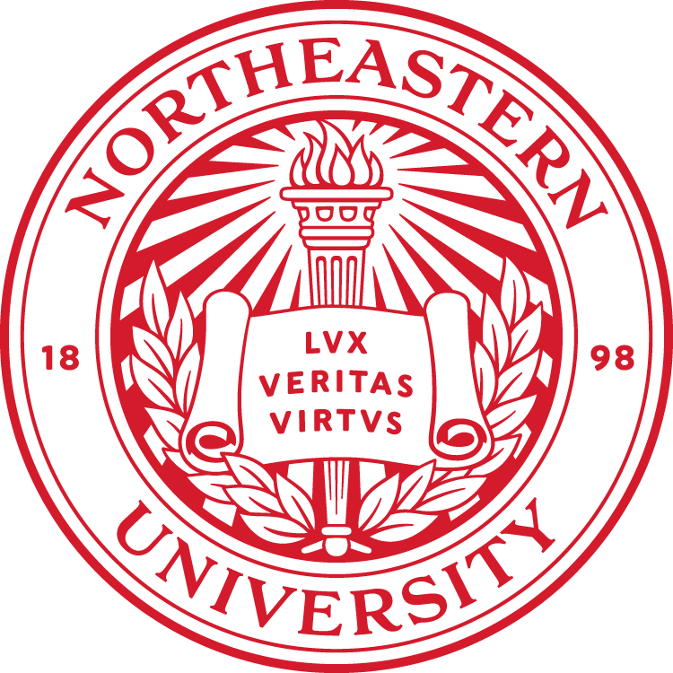
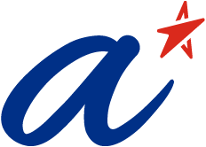
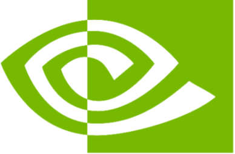
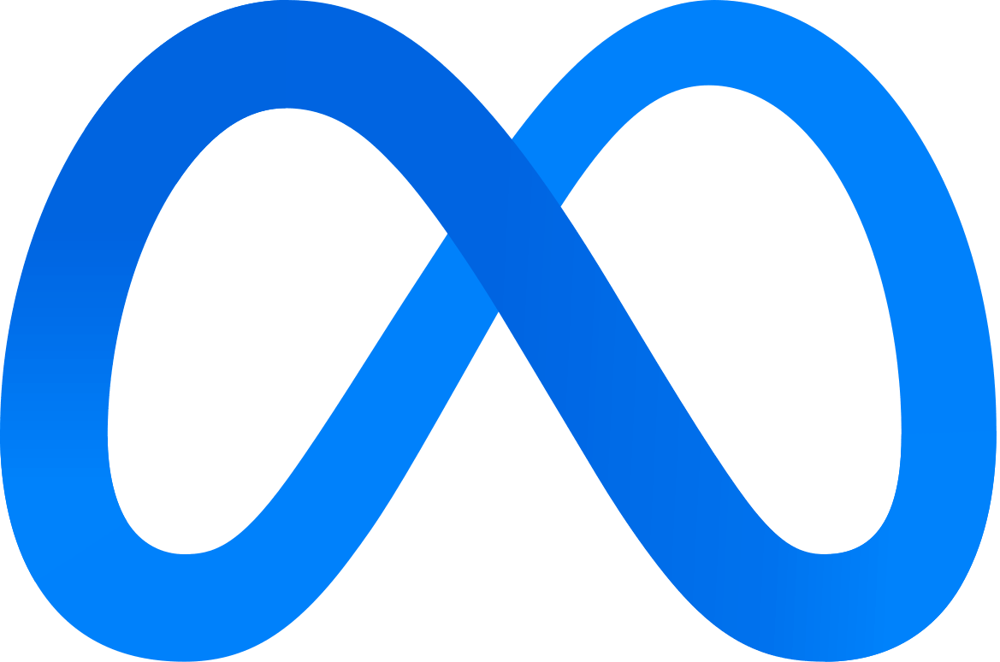

The RoboWorld Challenge 2026 advances embodied world modeling for robotics and autonomous driving. It brings together world models, vision-language-action (VLA) models, and embodied policies to study how agents ground language in visual observations, anticipate future states, and act safely.
Three tracks cover complementary settings: WorldNav for language-conditioned navigation without intermediate feedback, HA-VLN for human-aware social navigation with continuous observations, and SafeDrive-VLA for language-guided driving under instruction-scene conflicts.
The competition combines offline trajectory evaluation and closed-loop simulation, with track-specific datasets, metrics, and reference baselines. World-model and VLA approaches are encouraged, alongside policy-based methods where permitted by each track.
Track 1: WorldNav
Open-loop visual navigation from one initial RGB observation and a natural-language instruction.
RoboPAD focuses on adaptation, reasoning, evaluation, and safety for robot foundation models after pretraining. The challenge complements these themes through language-conditioned navigation, social interaction, and safe autonomous driving.
Challenge logistics, registration, and evaluation are managed by the RoboWorld organizing team. Challenge participation is separate from RoboPAD paper submission. Workshop program and attendance details are available on the workshop website.
Participants develop world-model-based or vision-language-action (VLA) agents for language-conditioned visual navigation. Given one initial egocentric RGB observation and an instruction, agents generate a full trajectory of continuous planar displacement and yaw actions, ending with Stop or a null action.
No goal image or intermediate feedback is provided. The track encourages planning grounded in predicted future observations, alongside VLA and policy-only approaches that map vision and language to actions.
02
Track 2 · Closed-loop social navigation
HA-VLN 2.0
Human-Aware Social Navigation
Participants develop agents that follow language instructions referencing human activities in continuous 3D environments. Using egocentric RGB-D observations, agents must reach the goal while maintaining socially compliant distances and avoiding collisions with moving people.
HA-VLN 2.0 uses 0.25 m forward steps and 15-degree turns. The track welcomes policy-based, VLA, and world-model approaches that handle partial observability, anticipate human motion, and re-plan as people block corridors or doorways.
03
Track 3 · Safety-aware driving
SafeDrive-VLA
Towards Safety in Autonomous Driving
Participants develop vision-language-action models (VLAs) for safe navigation guided by natural-language instructions. Given onboard visual observations and an instruction, models generate driving trajectories or control actions that account for surrounding traffic conditions.
Models should follow safe instructions, including turns, lane changes, and target-speed requests. When an instruction conflicts with the traffic scene, models must respond appropriately by slowing down, waiting, or selecting a safe alternative.
Timeline
Registration Opens
Register for your team by filling in this Google Form.
Release of Training Data and Baselines
Training data and reference baselines will be released to help teams get started across all three tracks.
Competition Servers Online @ CodaBench
Evaluation servers and public leaderboards will open on CodaBench for all three tracks.
Competition Deadline
Submit your final entries for official evaluation before the competition closes.
Award Decision Announcement
Final results and award-winning teams will be announced for each track.
Evaluation & Submission
Track #1
WorldNav
Open-loop visual navigation from one initial RGB observation and a natural-language instruction.
Track #2
HA-VLN 2.0
Closed-loop RGB-D navigation with socially grounded language and dynamic, interacting humans.
Track #3
SafeDrive-VLA
Language-guided driving that follows safe instructions and responds safely to instruction-scene conflicts.
Organizing Team
Challenge Organizers
Lingdong Kong
NUS Computing
Yifei Dong
U. of Washington
Fengyi Wu
U. of Washington
Shaoyuan Xie
UC Irvine
Junhao Liu
UC Irvine
Wei Chow
NUS Computing
Yingshuo Wang
UC Berkeley
Wei Gao

Northeastern U.
Qing Wu
NTU, Singapore
Program Committee
Shijie Li

A*STAR
Lai Xing Ng
A*STAR
Zhi-Qi Cheng
U. of Washington
Alfred Chen
UC Irvine
Wei Tsang Ooi
NUS Computing
Benoit R. Cottereau
CNRS & IPAL
Ziwei Liu
NTU, Singapore
Industry Mentors
Wenhao Ding

NVIDIA
Xian Sun

Meta
Associated Project
This project is affiliated with DesCartes, a CNRS@CREATE program on Intelligent Modeling for Decision-Making in Critical Urban Systems.